Introducción
1. Patronaje Básico de línea Infantil
Para la implementación y modificación de básicos es importante tener claridad en cada uno de los conceptos de patronaje como, medidas, pasos, elementos y vocabulario técnico que se irá implementando en el desarrollo de los trazos, moldes o planos.
En este punto, para la implementación de los básicos se debe tomar como referencia los pasos del patronaje, sobre la metodología SENA.
Pasos del patronaje – Implementación de básicos y desarrollo de modelos.
Básicos
Interpretación
-
Desahogos – Contorno. Largos y anchos
-
Sistema de ajuste
-
Sistema de cierre
Complementos
Señalización
Despiece
1.1 Cómo hacer un patrón a escala.
En términos de patronaje se puede trabajar a menor escala, cuando se habla de escala consiste en tomar un molde de cualquier línea y trazarlo en un tamaño menor o mayor, en este caso para la optimización de recursos se sugiere trabajar en escalas más pequeñas, si bien cuando se inicia a trabajar o se está teniendo una inmersión en patronaje se sugiere trabajar a escala real, en algunos casos por optimización se facilita trabajar en tamaños más pequeños, sin embargo, es importante aclarar que lo ideal o la sugerencia siempre será trabajar a escala real.
Las escalas más comunes en patronaje son a mitad (1/2) de escala o cuarto (1/4) de escala, en el mercado se encuentran juegos de reglas con el tamaño o las escalas referenciadas, sin embargo, no solo se puede trabajar en esas dos escalas, es decir en algunos casos se trabaja a quinta (1/5) de escala o sexta (1/6) escala.
1.2 Implementación de básico superior – Desarrollo de prendas superiores.
Básicos:
Lo primero que se debe tener es la base o los básicos con los que se va a trabajar, se debe tener en cuenta que los básicos se dividen en:
Base superior – Base inferior de Falda y Pantalón
En la metodología SENA, estos son los únicos puntos de partida para hacer cualquier análisis, trazo, molde o plano de una prenda.
Los básicos deben estar separados (delantero – posterior) y sin ningún tipo de alteración, preferiblemente en un material resistente como el cartón cartulina, cartulina o acetato.
Interpretación:
Para la interpretación se deben tener en cuenta varios puntos de referencia:
-
Desahogos: los desahogos se trabajan por contornos, largos y anchos. Las medidas anatómicas, corresponden a la base o básico, este punto de partida no tiene incrementos u holguras para el desarrollo de prendas, es decir que, dependiendo la funcionabilidad de la prenda o el diseño, se debe incrementar medidas que funcionan como holguras o desahogos.
-
Desahogos: los desahogos se trabajan por contornos, largos y anchos. Las medidas anatómicas, corresponden a la base o básico, este punto de partida no tiene incrementos u holguras para el desarrollo de prendas, es decir que, dependiendo la funcionabilidad de la prenda o el diseño, se debe incrementar medidas que funcionan como holguras o desahogos.
-
Desahogo por contorno: Los desahogos por contorno, corresponden a todo incremento de medida que se dé por contorno de pecho, contorno de cintura y contorno de cadera, únicamente se referencian estos 3 contornos, porque son los que abrazan o conforman los contornos más protuberantes del cuerpo. En las prendas superiores, el desahogo se trabaja con contorno de pecho, es decir en plano sobre línea de profundidad de sisa.
-
Desahogo por Largo: Los desahogos por largos, corresponden a:
Largo de la prenda a trabajar, en la metodología SENA, los largos de las prendas se trabajan siempre por costado, tomando como referencia el punto de cintura costado, es decir, si se va a trabajar el largo de un vestido, el largo se define desde el punto de cintura costado hacia las extremidades inferiores; Esto se debe a la toma de medidas y las referencias anatómicas del cuadro de tallas.
Desahogo por línea de profundidad de sisa o por sisa:
estos desahogos corresponden a la holgura que se debe trabajar por cavidad axilar, es decir al dar o asignar holgura por contorno, el desahogo o la holgura por sisa, debe ser proporcional. (Siempre el punto de referencia para la asignación de desahogos corresponde al desahogo por contorno)
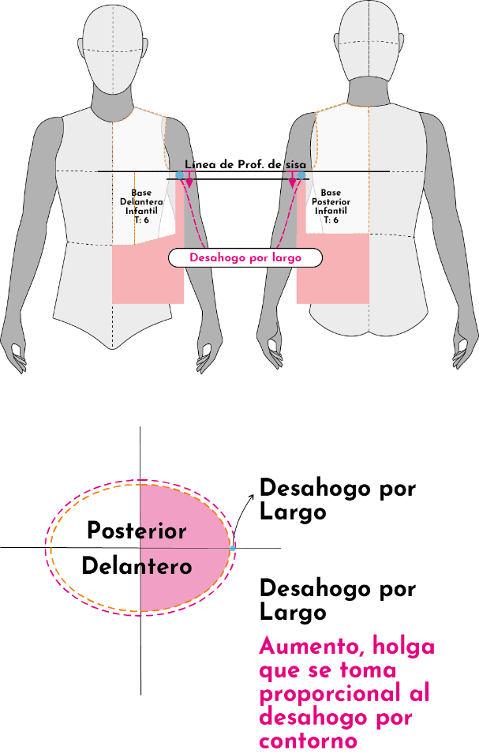-
Desahogo por Ancho: Los desahogos corresponden a:
Desahogo por hombro:
Los desahogos sueles ser incrementos que van o corresponden a la misma proporción de la holgura inicial, es decir, los desahogos por hombro corresponden al incremento que se aplica al desahogo por contorno.
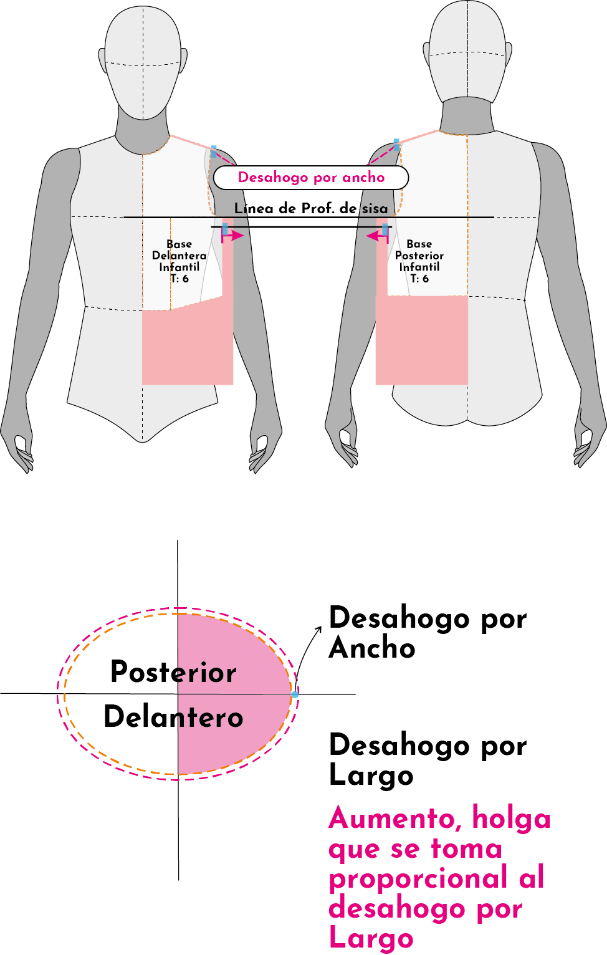Desahogo por Ancho de pecho y ancho de espalda:
Los desahogos sueles ser incrementos que van o corresponden a la misma proporción de la holgura inicial, es decir, los desahogos por anchos corresponden al incremento que se aplica al desahogo por contorno.
Los escotes, también se modifican y pueden entrar dentro de la categorización de un desahogo, sin embargo, manejan una terminología y explicación diferente.
-
Sistema de ajuste: Es todo ajustes (pinza o corte) que se le da a la prende, en este caso para infantil, no se trabajará o enfocará a sistemas de ajuste, los sistemas de ajuste se trabajarán en la línea de femenino, para tener una mejor comprensión y aprovechamiento de las pinzas
-
Sistema de cierre: Este punto es lo que permite que la prenda sea funcional, es decir, es lo que hace que la prenda abra o cierre según la tridimensión del cuerpo, en sistemas de cierre aplican: Cremalleras, botones, broches, gafetes, acordonados, encauchados y demás, se debe tener en cuenta que cada uno de los sistemas de cierre tienen especificaciones en el trazo, plano o patrón.
Complementos:
Toda interpretación, trazo, plano o prenda se compone por una serie de complementos como, bolsillos, cuellos, mangas, cortes, puños y demás, en esta parte se tiene en cuenta el trazo de las piezas que complementan o conforman el diseño de la prenda.
Señalización:
Identificar cada una de las piezas con las especificaciones del diseño o de la prenda.
Toda interpretación, trazo, plano o prenda se compone por una serie de complementos como, bolsillos, cuellos, mangas, cortes.
Despiece:
Separar cada una de las piezas anteriormente señalizadas y aumentar el margen de costura según las especificaciones técnicas.
Con el fin de apropiar e identificar cada uno de los pasos anteriormente mencionados, se dará inicio al trazo de una prenda superior, la cual irá evolucionando o cambiando su categorización a medida que se avance, es decir, en este primer trazo se hará el trazo de una especie de chaleco, el cual irá evolucionando a medida que se avance con las mangas, cuellos, puños y demás, hasta obtener una camisa debidamente señalizada y despiezada, es importante que tenga claro que este primer paso es el punto de partida para continuar con los siguientes.
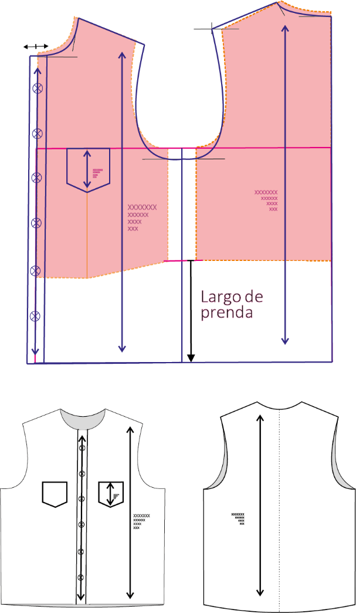1.3 trazo de cabezas mangas – Análisis de manga.
Cuando se habla de manga, básicamente se entiende o identifica como una pieza circular que cubre el brazo, sin embargo, existen diferentes tipos de puntos a tener en cuenta:
Largo de Manga:
El largo de manga anatómico es aquel que va desde el punto de acromio hasta la muñeca, se debe tener en cuenta que, sin importar el diseño, largo o forma del cuerpo de la manga, siempre se debe partir desde el largo anatómico.
Altura o Cabeza de Manga:
Cuando se habla de cabeza de manga, se identifican diferentes tipos de medidas, se puede trabajar con medida de cuadro de tallas, medida deducida o estandarizada. Se debe tener en cuenta que el largo de manga siempre será el mismo, sin importar que tipo de prenda o cabeza de manga se implemente.
Comportamiento de cabeza de manga:
Entre más larga sea la altura de cabeza de manga, otorgará menor movimiento sobre el cuerpo = Incomodidad, pero mayor estructura, esta descripción corresponde a las prendas que van ajustadas o con la horma del cuerpo.
Entre más corta sea la altura de cabeza de manga, otorgará mayor movimiento sobre el cuerpo = Comodidad, pero menor estructura, esta descripción corresponde a las prendas que van holgadas o desestructuradas sobre el cuerpo.
Básicamente si está descripción se divide o se categoriza en prendas de vestir, se estaría diciendo qué:
-
Entre más corta sea la cabeza de manga, corresponde a prendas DEPORTIVAS
-
Entre más larga sea la cabeza de manga, corresponde a prendas FORMALES
-
Un punto intermedio entre las dos anteriores, corresponde a prendas CASUALES
Fuente: Manual_patronaje_basico_interpretacion_disenos.PDF - Sena
Cabeza de manga por cuadro de tallas:
Las cabezas de manga de los cuadros de tallas suelen ser categorizadas para prendas casuales, la medida se identifica en el cuadro de tallas, este tipo de cabeza de manga es estandarizada, no se tiene en cuenta el comportamiento sobre el cuerpo y según el tipo de prenda.
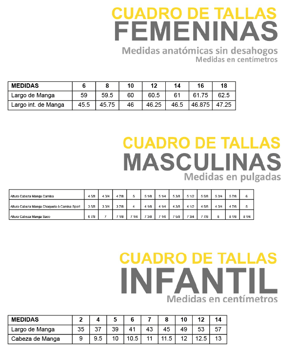Fuente: Manual_patronaje_basico_interpretacion_disenos.PDF - Sena
Cabeza de manga por medida deducida:
Las cabezas de manga por medida deducida, sale según el tipo de plano y línea que se trabaja, es decir que cada vez que se esté trazando un plano, sobre ese plano con la medida de recorrido de sisa delantera y sisa posterior se identifica la cabeza de manga, la sumatoria de esas dos medidas son divididas de acuerdo con el tipo de prenda, para identificar la cabeza de manga.
-
Cabeza de manga deportiva = Sisa delantera + Sisa posterior / 5
-
Cabeza de manga Casual = Sisa delantera + Sisa posterior / 4
-
Cabeza de manga Sastre o Formal = Sisa delantera + Sisa posterior / 3
Cabeza de manga estandarizada:
Las cabezas de manga estandarizadas, suelen ser medidas que, sin explicación alguna, son entregadas para el desarrollo de las prendas.
Trazo de cabeza de manga:
Dando continuidad al chaleco anteriormente trazado y con el fin de hacer el análisis de los diferentes tipos de trazos de manga, se debe tomar como referencia las medidas y el desarrollo de la primera parte del plano “chaleco”. Para iniciar el trazo de cabeza de manga lo primero que se debe tener en cuenta son las medidas que se van a trabajar:
Recorrido sisa delantera
Recorrida sisa posterior
Tipo de cabeza de manga
Largo de manga
En el desarrollo de curvas y trazos en las cabezas de manga existen varias formas de trazarlas, la implementada y guiada en el vídeo hace referencia a un primer acercamiento didáctico frente a la comprensión y el comportamiento de las mangas.
Trazo de manga
Debe tener en cuenta que el trazo de manga y las medidas de las sisas dependen del trazo de la prenda o diseño a trabajar, es decir que siempre en este punto las mangas hacen parte de los complementos en los pasos del patronaje.

1.3.1 Modificaciones de manga
Tomando como punto de partida el trazo de manga base, el cual corresponde al tipo de prenda y tienen el análisis de cabeza de manga, se trabajan modificaciones por largo.
Los largos más comunes son:
Manga ¾.
Manga a la altura del codo.
Manga corta.
Manga coqueta.
Sin manga o sisa.
Estos son solo algunos de todos los que existen, es importante mencionar que en este caso únicamente se trabajará desde la parte estructural o como queda en el cuerpo y no desde el nombre comercial, es decir a nivel nacional los nombres varían de acuerdo con el contexto, motivo por el cual únicamente se trabajará el nombre funcional o que aplica con las referencias del cuerpo.
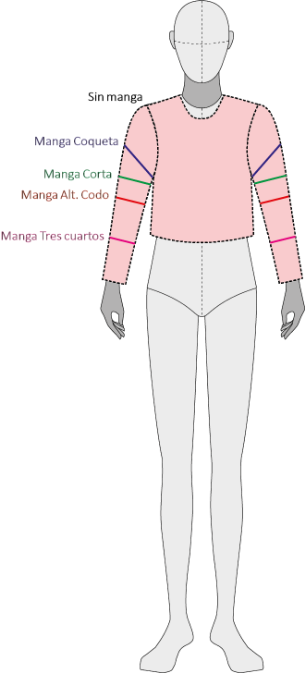Dentro de las variaciones más comunes encontradas en mangas, se identifican los puños y las portañuelas, en infantil y masculino suelen ser utilizadas en el análisis o la interpretación de prendas superiores por camisas, chaquetas, vestidos y demás.
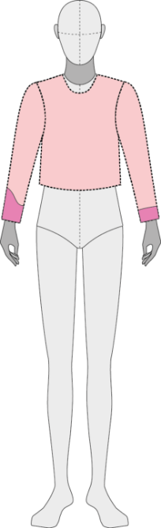Dando continuidad al chaleco anteriormente trazado y con el fin de hacer el análisis de los diferentes tipos de modificaciones en manga, se debe tomar como referencia las medidas y el desarrollo de la primera parte del plano “chaleco” y las cabezas de manga, es decir que siempre en este punto las mangas y modificaciones hacen parte de los complementos en los pasos del patronaje.
1.4 Trazo de cuellos – Generalidades y comportamientos.
Cuando se habla de cuellos, lo primero que se debe tener en cuenta es la base y forma de cada escote, es decir si se habla de la parte funcional del cuello, el cuello es una extensión o pieza adicional que se une a un escote, tanto delantero como posterior.
Trabajando bajo el contexto funcional y no comercial todos los cuellos en patronaje, se dividen en 3 grandes grupos:
Cuellos por Medida de contorno
Por unión de hombro
Por extensión
Los cuellos por medida de contorno:
Son cuellos que se caracterizan por tener forma de tira, en la mayoría de los casos abraza el cuello y se mantiene “levantado” sobre la estructura. Desde plano suelen tener curvas disimiles al escote y en la mayoría de los casos suele salir en un plano aparte, es decir sobre ejes de trazo diferentes al plano de la prenda.
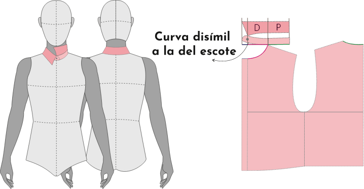Dentro del trazo y la misma estructura del plano de los cuellos por medida de contorno se identifican las capotas.
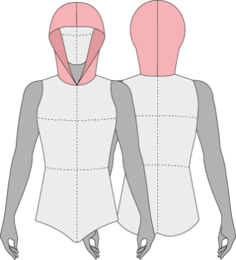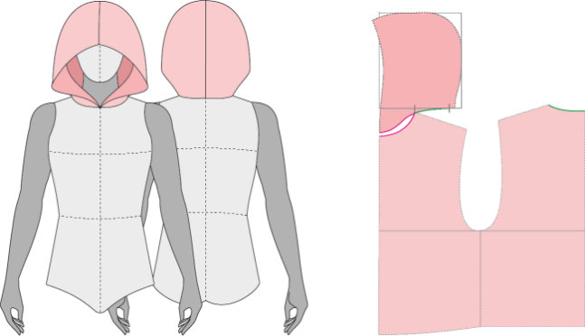Los cuellos por unión de hombro:
Son cuellos que se caracterizan por que descansan sobre el cuerpo, es decir no se mantiene “levantado” sobre la estructura del cuello, si no que sale o queda con la misma estructura o forma del cuerpo. Desde plano suelen salir sobre el mismo trazo de la prenda, en la mayoría de los casos suelen tener unión o costura en escote.

Los cuellos por extensión:
Son cuellos que se caracterizan por que combinan el comportamiento de los dos anteriores, es decir una parte del cuello (Delantero – Posterior) abraza el cuello y se mantiene “levantado” sobre la estructura y la otra parte (Delantero – Posterior) descansan sobre el cuerpo, es decir no se mantiene “levantado” sobre la estructura del cuello, este tipo de cuellos suelen salir en la parte que descansa sobre el cuerpo, sin ningún corte si no como una extensión de la prenda y la parte que abraza el cuello con corte de unión en escote. Desde plano suelen salir sobre el mismo trazo de la prenda.

Trazo de cuellos.
Dando continuidad al chaleco anteriormente trazado y con el fin de hacer el análisis de los diferentes tipos de cuellos, se debe tomar como referencia las medidas y el desarrollo de la primera parte del plano “chaleco”, es decir que siempre en este punto los cuellos hacen parte de los complementos en los pasos del patronaje.
1.5 Despiece de planos
Tomando como punto de partida el trazo de manga base, el cual corresponde al tipo de prenda y tienen el análisis de cabeza de manga, se trabajan modificaciones por largo.
Los largos más comunes son:
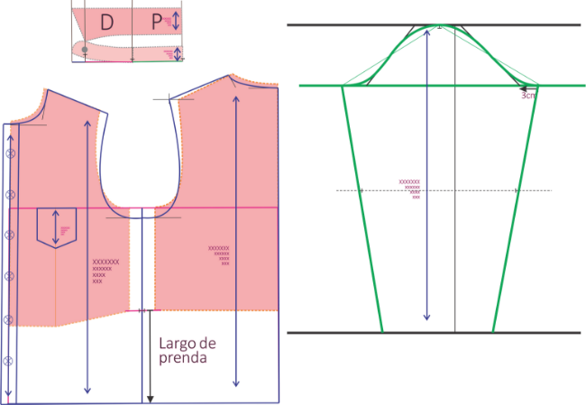Para iniciar hacer un despiece se debe aclarar que todo depende del diseño, dibujo plano o ficha técnica, el ejercicio que se va a desarrollar es simplemente un ejercicio práctico con simulaciones o ejemplos variantes a cada diseño.
Cuando se hace un despiece como su nombre lo indica consiste en calcar pieza por pieza con el fin de identificar cada uno de los moldes que se cortarán en el material textil o material sobre el que se realizará la prenda.
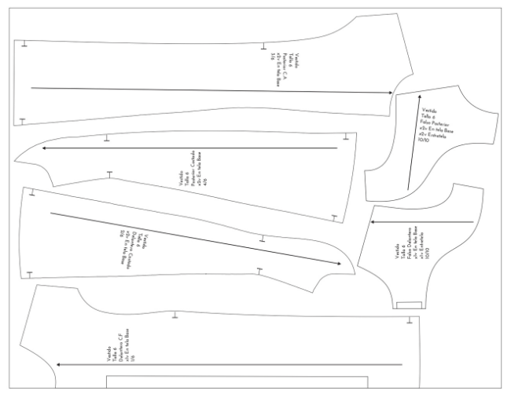Elementos para tener en cuenta al momento de calcar las piezas para el despiece:
Margen de costura:
El margen de costura depende del tipo de operación o maquinaria que se vaya a trabajar, por lo general en el común denominador de los moldes se asigna 1cm de margen de costura, con el fin de confeccionar o unir las piezas en maquina plana a 1cm del corte y cubrir con fileteadora o sesgo, dependiendo del tipo de prenda, nivel o calidad.
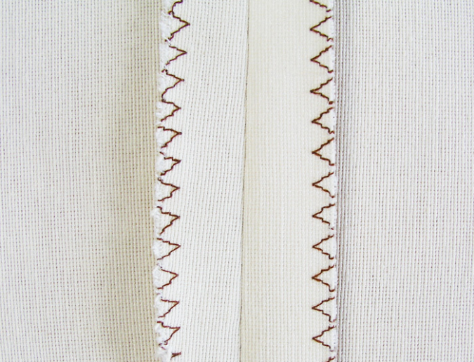Es importante tener en cuenta que el margen de costura depende al 100% de la operación o el tipo de máquina, es decir si en este caso se va a trabajar una costura francesa, el consumo o el margen de costura debe ser superior a 1cm, si se va a unir con cerradora de codo, recubridora, fileteadora y demás requiere de especificaciones diferentes en el margen de costura.
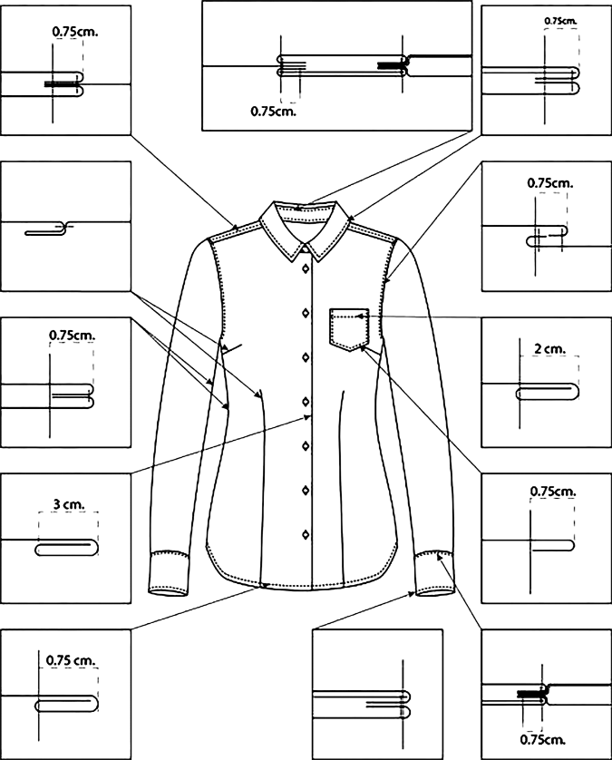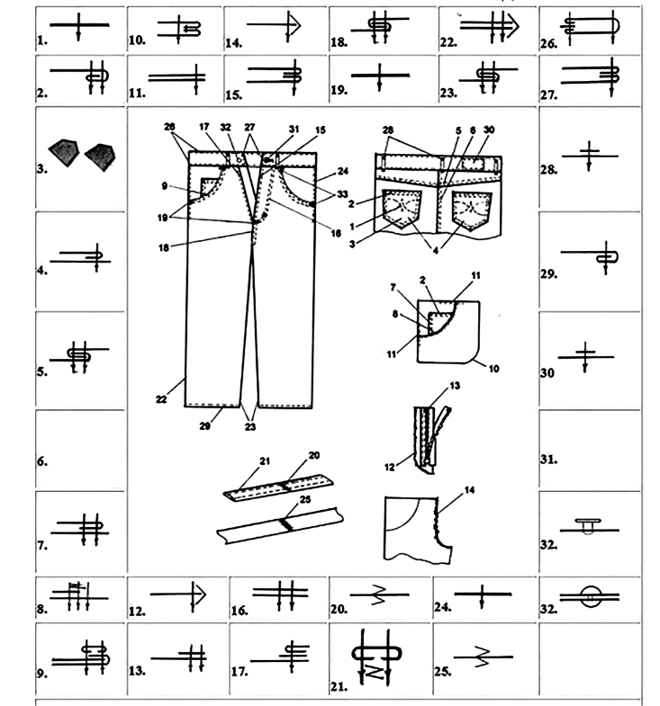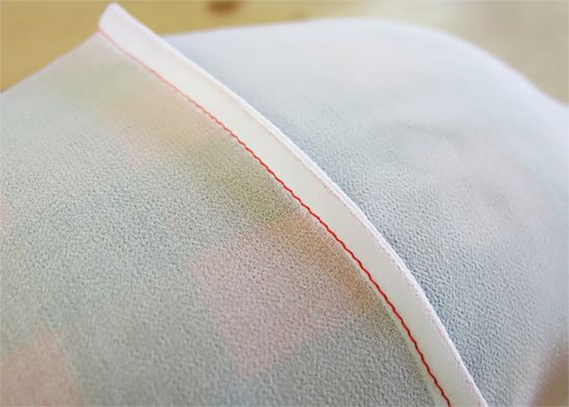Señalización:
La señalización del plano y el molde debe ir de acuerdo con las especificaciones de diseño, la señalización va desde el hilo de tela, hasta los piquetes, la señalización es la lectura a nivel general del molde.
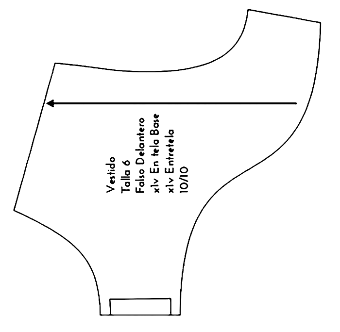Se debe tener en cuenta que las medidas implementadas o referenciadas en los videos, son solo ejemplos y guías, cada plano o cada uno tendrá referencias diferentes, esto depende del tipo de trazo, elementos o incluso el tipo de lápiz que se trabaje, lo importante es siempre referenciar las medidas del cuadro de tallas y las fórmulas referenciadas.
1.6 Trazo de prendas superiores.
Para apropiar todos los conceptos y pasos trabajados en el trazo de patrones, se debe ir analizando prendas desde imagen, dibujo plano, ficha técnica o muestra física, con el fin de tener referencias visuales de lo que se va trabajando.
Para el desarrollo del trazo de prendas superiores, se trabajarán 3 imágenes de referencia, en las cuales podrá identificar 2 prendas para niña y 1 prenda para niño, la finalidad del ejercicio es poder comparar de qué manera se puede implementar el básico llevándolo hacia cualquier tipo de prenda.
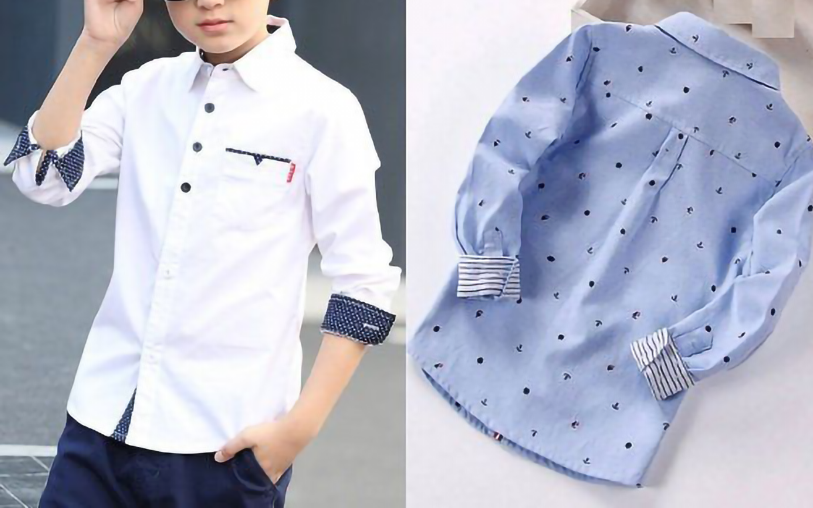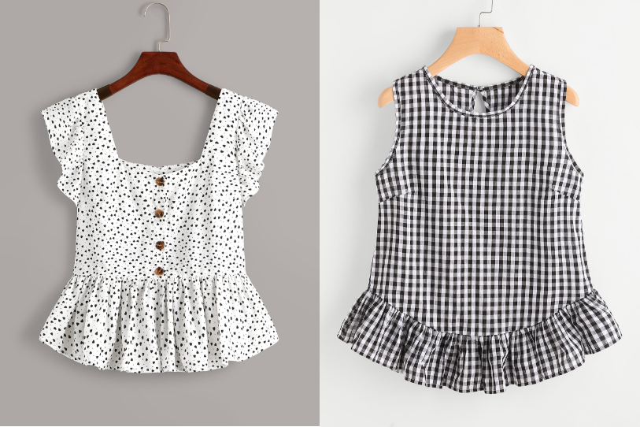Recuerde tener en cuenta el análisis de cada prenda:
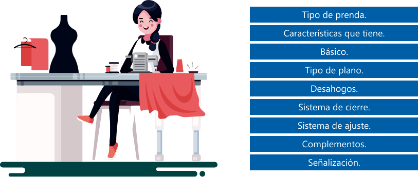Cuando se empieza a trabajar el trazo de prendas, desde los básicos, los básicos siempre deben ir alineados o aplomados sobre una línea base de construcción, en prendas superiores la línea de aplome o línea base será la línea de profundidad de sisa.
Se debe tener en cuenta que las medidas implementadas o referenciadas en los videos, son solo ejemplos y guías, cada plano o cada uno tendrá referencias diferentes, esto depende del tipo de trazo, elementos o incluso el tipo de lápiz que se trabaje, lo importante es siempre referenciar las medidas del cuadro de tallas y las fórmulas referenciadas.
1.7 Trazo de prendas Inferiores – Faldas
Para apropiar todos los conceptos y pasos trabajados en el trazo de patrones, se debe ir analizando prendas desde imagen, dibujo plano, ficha técnica o muestra física, con el fin de tener referencias visuales de lo que se va trabajando.
Para el desarrollo del trazo de prendas inferiores - falda, se trabajarán 3 imágenes de referencia, sobre estas imágenes se identifican diferentes tipos de pretinas, vuelos y amplitudes.
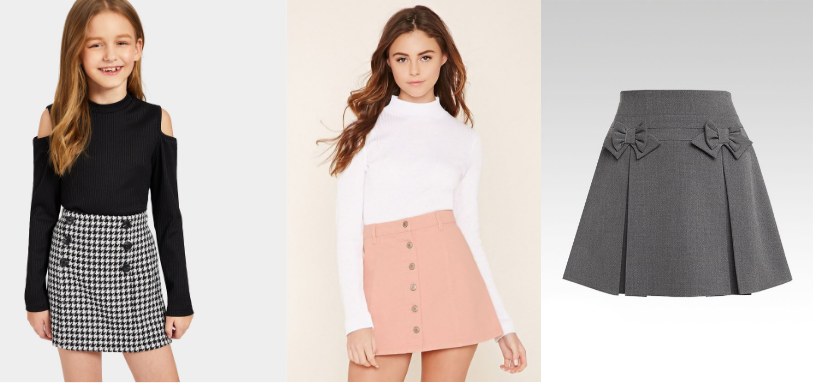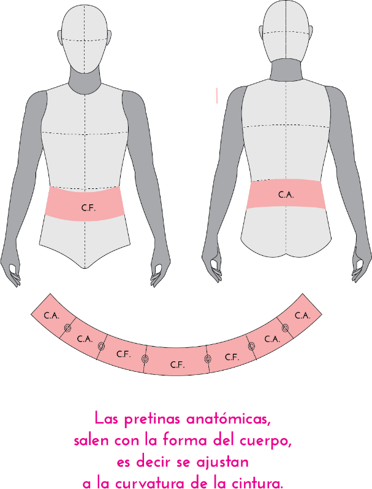Pretina recta.
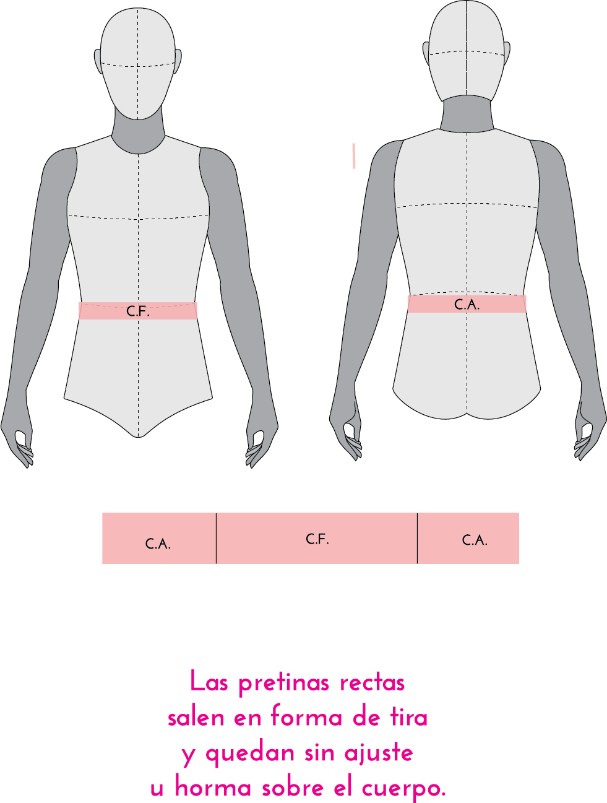Debe tener en cuenta que a nivel comercial existen diversos nombres para cada una de las siluetas y/o formas de las prendas, sin embargo, en este caso se trabajará desde la parte funcional sin especificar los nombres comerciales.
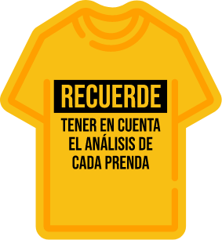Cuando se empieza a trabajar el trazo de prendas, desde los básicos, los básicos siempre deben ir alineados o aplomados sobre una línea base de construcción, en prendas inferiores la línea de aplome o línea base será la línea de altura de cadera. Recuerde que, con el fin de poder adquirir cada vez más fortaleza en patronaje, lo ideal es poder cortar, pegar, trasladar y experimentar.
Se debe tener en cuenta que las medidas implementadas o referenciadas en los videos, son solo ejemplos y guías, cada plano o cada uno tendrá referencias diferentes, esto depende del tipo de trazo, elementos o incluso el tipo de lápiz que se trabaje, lo importante es siempre referenciar las medidas del cuadro de tallas y las fórmulas referenciadas.
1.8 Trazo de prendas Inferiores – Pantalón
Para apropiar todos los conceptos y pasos trabajados en el trazo de patrones, se debe ir analizando prendas desde imagen, dibujo plano, ficha técnica o muestra física, con el fin de tener referencias visuales de lo que se va trabajando. Para el desarrollo del trazo de prendas inferiores - pantalón, se trabajarán 2 imágenes de referencia, una bajo los requerimientos de un niño y otra bajo los requerimientos de una niña, partiendo desde el mismo básico.
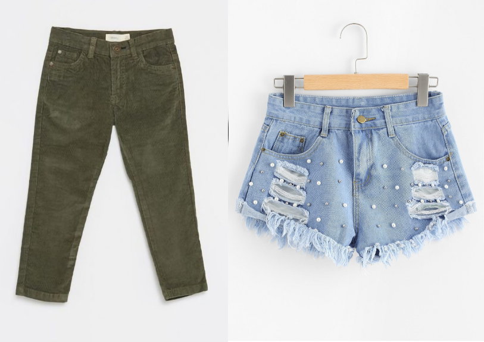Dentro del desarrollo de pantalón se encontrarán especificaciones como partes que conforman un bolsillo, como:
Boca de bolsillo – Falso de Bolsillo – Fondo de Bolsillo – Vista de bolsillo
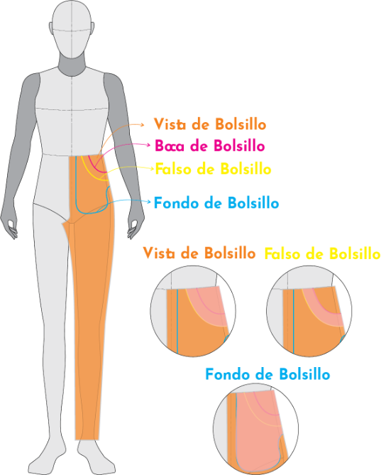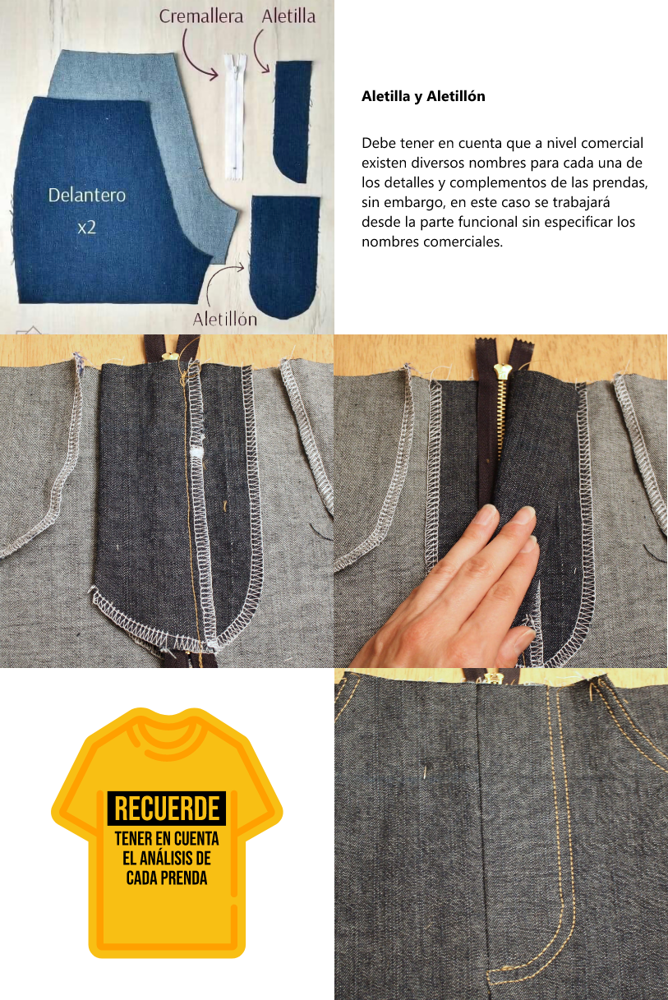Cuando se empieza a trabajar el trazo de prendas, desde los básicos, los básicos siempre deben ir alineados o aplomados sobre una línea base de construcción, en prendas inferiores la línea de aplome o línea base será la línea de altura de cadera o tiro.
Se debe tener en cuenta que las medidas implementadas o referenciadas en los videos, son solo ejemplos y guías, cada plano o cada uno tendrá referencias diferentes, esto depende del tipo de trazo, elementos o incluso el tipo de lápiz que se trabaje, lo importante es siempre referenciar las medidas del cuadro de tallas y las fórmulas referenciadas.
1.9 Trazo de prendas – Overol
Para apropiar todos los conceptos y pasos trabajados en el trazo de patrones, se debe ir analizando prendas desde imagen, dibujo plano, ficha técnica o muestra física, con el fin de tener referencias visuales de lo que se va trabajando. Para el desarrollo del trazo de prendas inferiores - pantalón, se trabajarán 2 imágenes de referencia, una bajo los requerimientos de una niña y otra bajo los requerimientos de un niño, partiendo desde el mismo básico.
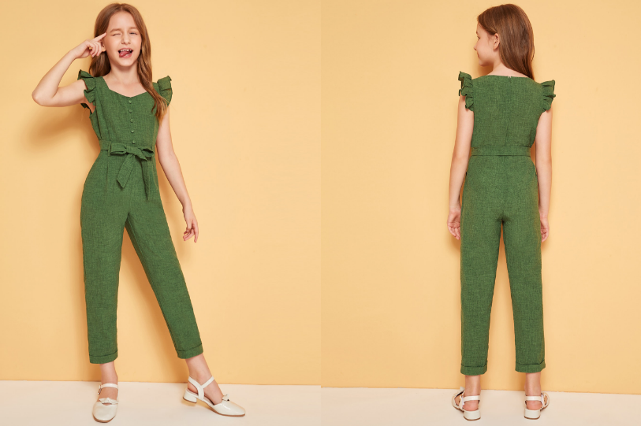Dentro del desarrollo de los patrones se irá trabajando elementos como la horcajadura, la cual corresponde a la holgura o desahogo al fusionar básicos superiores e inferiores, este aumento o desahogo, son funcionales es decir son elementos básicos para que la prenda a trabajar quede sobre el cuerpo sin ningún tipo de inconveniente y cumpla con la funcionalidad final.
Debe tener en cuenta que a nivel comercial existen diversos nombres para cada una de los detalles y complementos de las prendas, sin embargo, en este caso se trabajará desde la parte funcional sin especificar los nombres comerciales.
Cuando se empieza a trabajar el trazo de prendas, desde los básicos, los básicos siempre deben ir alineados o aplomados sobre una línea base de construcción, en prendas como overol, el punto de partida es el pantalón, así que la línea de aplome o línea base será la línea de altura de cadera o tiro.
Se debe tener en cuenta que las medidas implementadas o referenciadas en los videos, son solo ejemplos y guías, cada plano o cada uno tendrá referencias diferentes, esto depende del tipo de trazo, elementos o incluso el tipo de lápiz que se trabaje, lo importante es siempre referenciar las medidas del cuadro de tallas y las fórmulas referenciadas.
1.10 Trazo de prendas – Bata o vestido
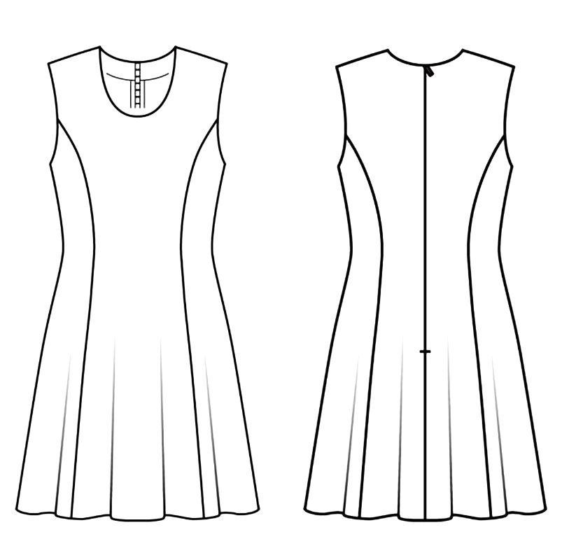Para el desarrollo del trazo de la prenda, se harán todos los pasos del patronaje mencionados al inicio, con el fin de validar y confrontar dudas en los conocimientos adquiridos.
En este trazo usted partirá de los básicos, pasando por el análisis del diseño, interpretación y trazo del plano, complementos y despiece.
Se debe tener en cuenta que las medidas implementadas o referenciadas en los videos, son solo ejemplos y guías, cada plano o cada uno tendrá referencias diferentes, esto depende del tipo de trazo, elementos o incluso el tipo de lápiz que se trabaje, lo importante es siempre referenciar las medidas del cuadro de tallas y las fórmulas referenciadas.
Actividad didáctica
¡Pon a prueba tu conocimiento!
La siguiente actividad tiene como propósito validar los conocimientos relacionados con el tema Normativa vigente proceso ECCL.
IniciarGlosario
Bidimensional:que se representa según su altura y su anchura, y no su profundidad.
Diseño:actividad creativa orientada a soluciones idóneas a ciertas problemáticas.
Moda: hábito repetitivo que identifica a una persona, una especie de presión social, que debe consumir, utilizar o hacer.
MoodBoard:su traducción literal es mapa de inspiración y aunque su uso está muy asociado al ámbito de la decoración de interiores o la moda, realmente se utiliza en entornos creativos muy diversos, desde el diseño de productos o servicios al audiovisual o el diseño gráfico.
Pirognóstico:ensayo sin componentes reactivos, quiere decir, reconocimiento de los componentes, mediante la aplicación adecuada del fuego.
Software:término informático que hace referencia a un programa o conjunto de programas de cómputo, así como datos, procedimientos y pautas que permiten realizar distintas tareas en un sistema informático.
Tipología:estudio de los tipos o modelos que se usan para clasificar en diversas ciencias o disciplinas
Vectores:en Software de diseño, son líneas que se crean y permiten, expandir, modificar, a el tamaño que sea sin pixelarse por que se unen por coordenadas matemáticas del programa y no se generan por números fijos.
Material complementario
| Autor, (año del documento o material), Nombre del documento o material. | Tipo de material ( Video, capítulo de libro, articulo, otro) | Enlace del Recurso o Archivo del documento o material |
|---|---|---|
| Gutiérrez Rengifo, Lucy Alejandra, Moncayo Velazco, Adriana Ximena Instructora, Tanaka, Kenji Instructora, Kimura, Funiyo Experta, and Moreno Brand, Diana Coordinadora. Manual De Patronaje Básico E Interpretación De Diseños. Bogotá: SENA, Japan Inernational Cooperation Agency "jica", 2011. Print. | Libro | Descargar |
Referencias bibliográficas
Gutiérrez Rengifo, Lucy Alejandra, Moncayo Velazco, Adriana Ximena Instructora, Tanaka, Kenji Instructora, Kimura, Funiyo Experta, and Moreno Brand, Diana Coordinadora. Manual De Patronaje Básico E Interpretación De Diseños. Bogotá: SENA, Japan Inernational Cooperation Agency jica, 2011. Print.https://sena-primo.hosted.exlibrisgroup.com/permalink/f/q6j6k0/sena_aleph000025496
Fotografías y vectores tomados de https://www.shutterstock.com/ y https://www.freepik.es/
Licencia Creative Commons
CC BY-NC-SA
Ver licencia.